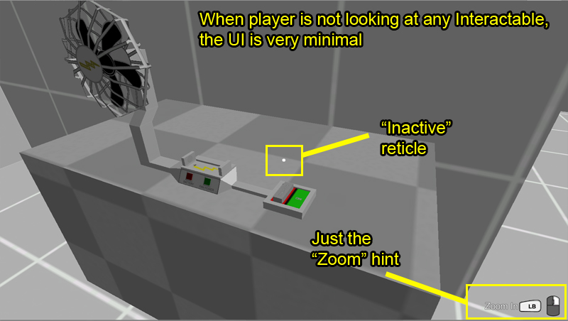
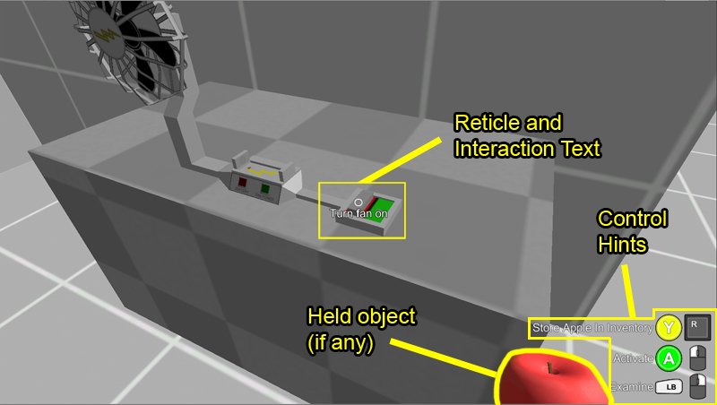
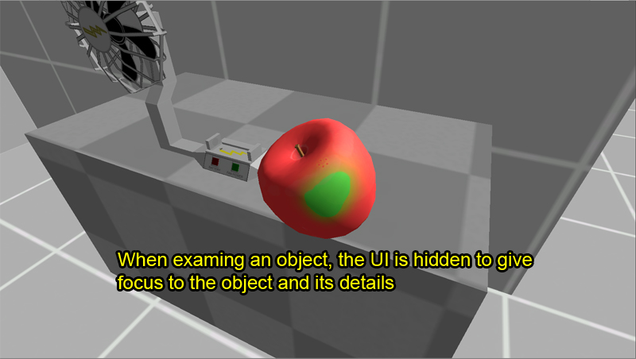

The core UI consists of some basic information and feedback. Depending on what the player is looking at, what they are holding, etc. the UI changes.
By default, the neutral UI (when player is not looking at any Interactable object) is fairly minimal, as shown below:
But, when the player is holding an Inventory Item, and looking at an Activate type object:
And when the player is examining an object in their hand, the UI is hidden entirely, as shown below:
